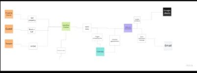
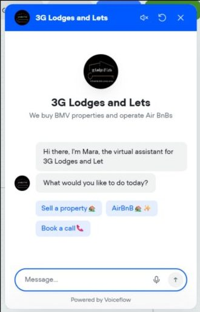
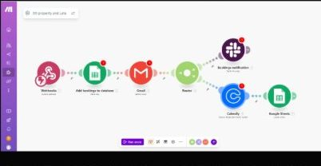

Overview
Using Voiceflow, I designed and prototyped a conversational AI assistant for a company that buys below-market-value properties and runs short lets. It automates lead qualification, property enquiries and booking workflows, integrates with Calendly and Google Sheets, and responds conversationally to user intent.
The problem
The sales team struggled with delayed lead follow-ups and inconsistent service enquiries. The company relied on manual conversations over WhatsApp and email to handle property enquiries, seller leads and Airbnb bookings. Conversations felt transactional and users often dropped off mid-interaction. Key issues were drop-offs when moving between systems, repetitive manual data entry, a lack of personality and reassurance in dialogue, and no clear conversation logic or error recovery. They needed a scalable, always-available assistant that could qualify and route enquiries without losing the personal tone that kept clients engaged.
My role
I led the conversational UX design and content strategy with the business owner to align tone, simplify workflows and humanise automated touchpoints. I defined the chatbot's purpose, scope and success metrics, designed the conversation framework and voice, wrote structured dialogue flows for buying, letting and booking, integrated Voiceflow with Google Sheets and Make.com for data capture and CRM routing, and worked with developers and marketing to align the bot with the lead funnel.
Mapping the journey and the system

Audit the current process first
A discovery sprint covered the service process and back-end workflows, existing enquiry forms and call scripts, the most frequent user intents and friction points, and the administrative tasks behind manual follow-ups and booking. That surfaced two design opportunities: use conversation to guide users to the right action faster, and connect the chatbot to simple automations to remove human dependency for early-stage leads.
One conversational layer, three entry points
Property owners, Airbnb guests and general clients all enter through the same conversational layer in Voiceflow. Make.com is the automation hub: it routes data to Google Sheets for lead storage, Calendly for scheduling calls or viewings, and Slack for notifying agents of high-value opportunities. Each trigger happens instantly, so conversation design and service operations are one bridge.
Designing Mara
The client wanted an assistant that felt human, not robotic or salesy. Tone-mapping exercises defined how Mara's personality shifts across contexts: curious and friendly in the inquiry phase, efficient and focused when qualifying, reassuring at booking ("You're all set. You'll get your confirmation email in a few minutes.").
The ideal experience was "someone who feels helpful and professional, not robotic or salesy". The persona needed to build trust instantly for new landlords and short-let guests, reduce friction with plain language, reflect brand values and stay consistent from booking to follow-up.

Decisions
1. Intent first, then relevance
I mapped three key intents: Sell a Property, Airbnb Enquiry and Book a Call, with primary intents, sub-intents (location, budget, property type), fallback and escalation paths, and system messages for confirmations, errors and incomplete inputs. Each intent triggers a dedicated Voiceflow path that adjusts wording, questions and tone. People engage longer when the bot's questions clearly relate to their goal.
2. One question per turn
Early testers said the bot's property questions felt "too form-like". I restructured the qualification flow to mimic human questioning: one question per turn, small acknowledgements ("Got it", "Perfect"), and each message nudging towards an outcome. The bot only asks contextually relevant follow-ups. Slot-filling and variable handling let later blocks reference earlier answers, so the conversation feels like it has memory.
3. Make hand-offs feel continuous
In earlier versions users dropped off when redirected to external links or booking systems. I redesigned the handoff so Mara introduces the transition in plain language before showing the Calendly widget ("I can help you book a quick call with our agent. Just pick a time that works for you below"), then confirms completion conversationally ("Thanks! You'll get your confirmation email shortly, and we'll call you back within 24 hours").
4. Integrate with automation so the bot does real work
- Lead capture: chatbot collects details and pushes them to Google Sheets via Voiceflow's API integration.
- Email notifications: automatic emails to the sales team when a new lead or booking request is made.
- Call scheduling: selecting "Book a call" triggers a Make.com workflow that sends a scheduling link.
- Data review dashboard: every captured lead is logged for reporting and pattern analysis.

Testing and iteration
I built a functional prototype in Voiceflow and tested it with internal users and sample customers. Users preferred quick-option buttons for initial intents, followed by short free-text inputs for personal details. A confirmation message after each major action ("Your booking request has been received") increased trust. And the fallback tone was critical: empathetic phrasing outperformed neutral system responses. I then refined the conversation and ran simulated user tests for tone clarity and intent accuracy. I shortened long prompts to reduce decision fatigue (replacing "Please select which of these property conditions applies" with "How's the condition of your property?").
Results
Response time reduced from 8 hours to under 2 minutes.
Lead qualification accuracy improved.
Booking completion rate. Team workload reduced by half through automation, and 82% of testers said the chatbot "felt natural to talk to".
Reflection
- Design conversations, not scripts. Real impact comes from adaptive logic, not pre-written lines.
- Automation must sound human. The right tone bridges AI efficiency with emotional connection.
- Data is dialogue. Every captured response informs how the next one should feel.